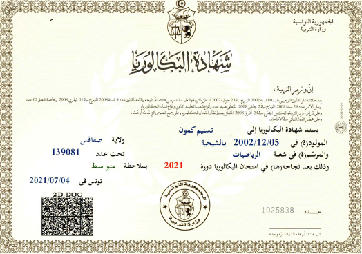
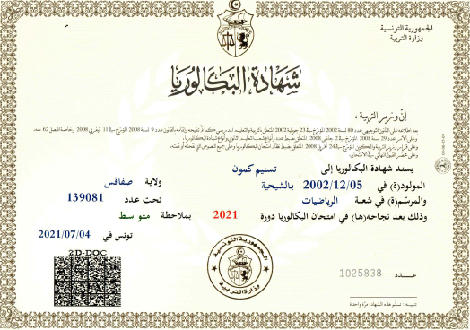
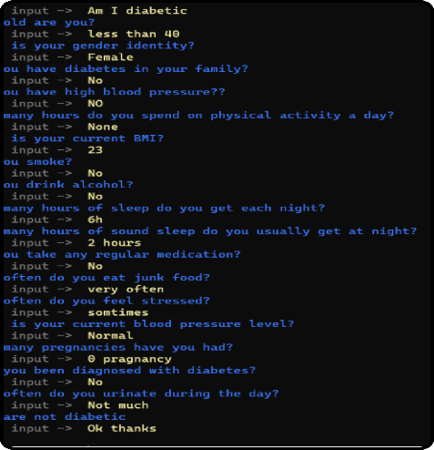
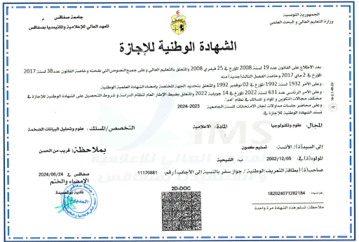

2021 - Baccalaureate in Mathematics
In 2021, I obtained my baccalaureate in Mathematics, which marked the beginning of my journey in science and technology.
In 2021, I obtained my baccalaureate in Mathematics, which marked the beginning of my journey in science and technology.
During my PFA internship at CRNS in 2023, I developed a chatbot for diabetes diagnosis, contributing to healthcare innovation and enhancing my technical skills.
In 2024, I developed a chatbot for the customer service of the Terradelyssa brand during my final year project internship at CHO Group.
I completed my Bachelor's degree in Computer Science with a specialization in Data Analysis and Big Data from ISIMS, solidifying my academic and professional foundation.
